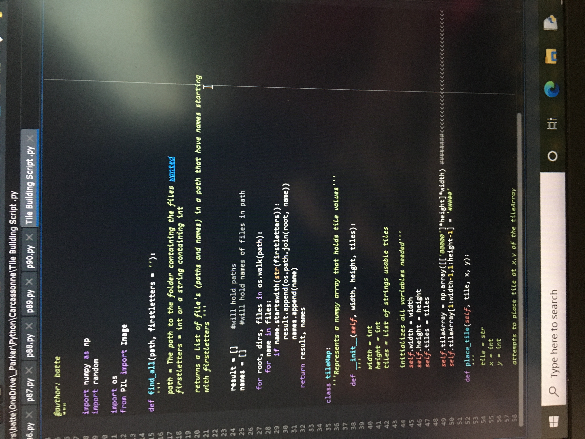
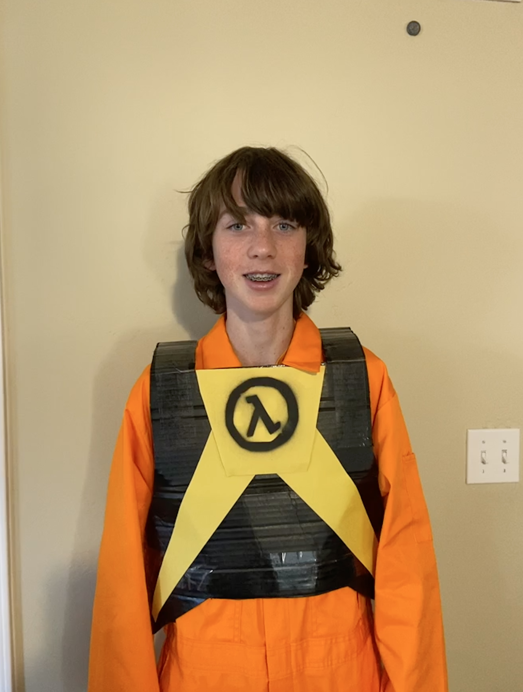
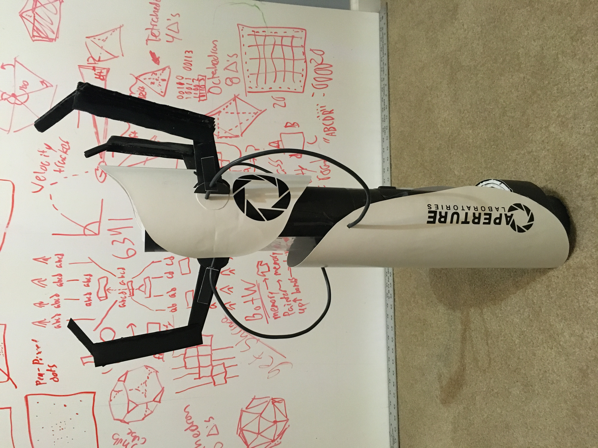
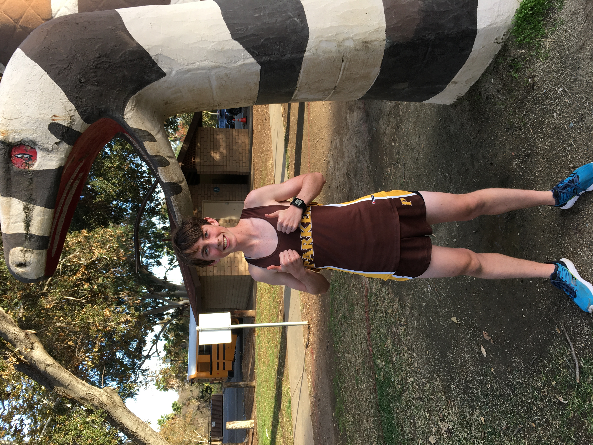
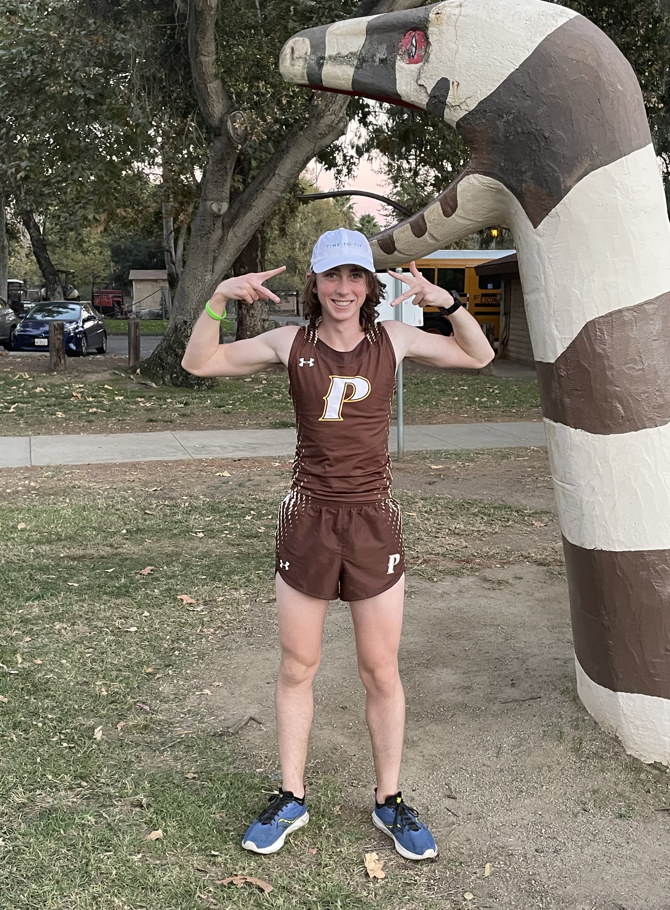
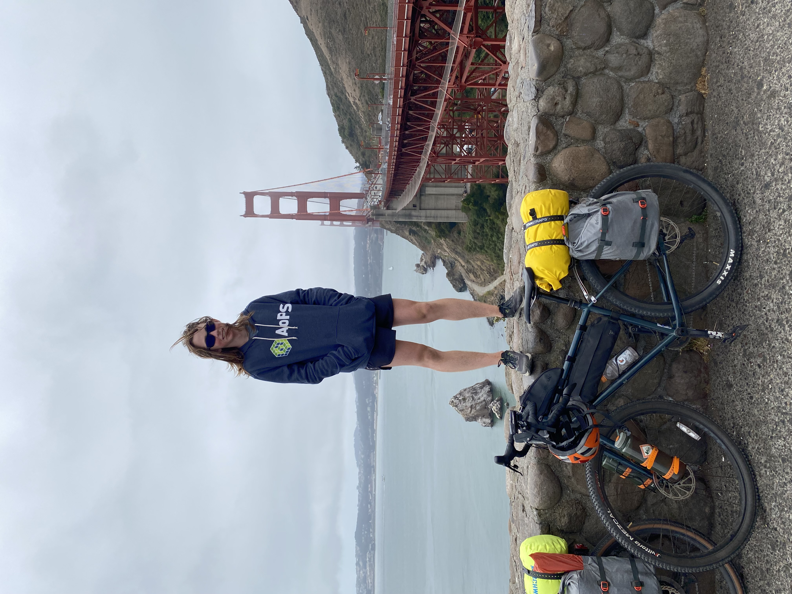
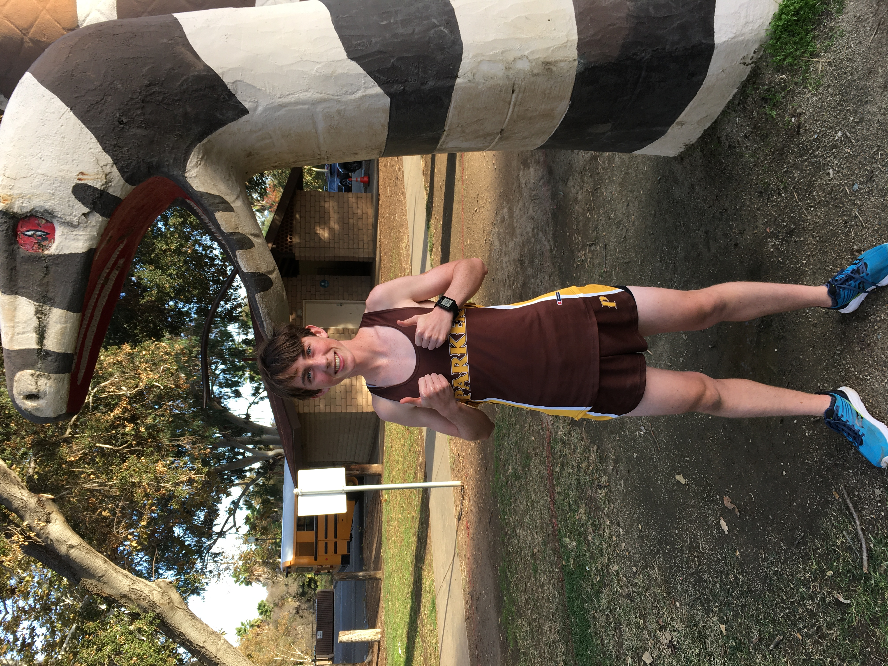
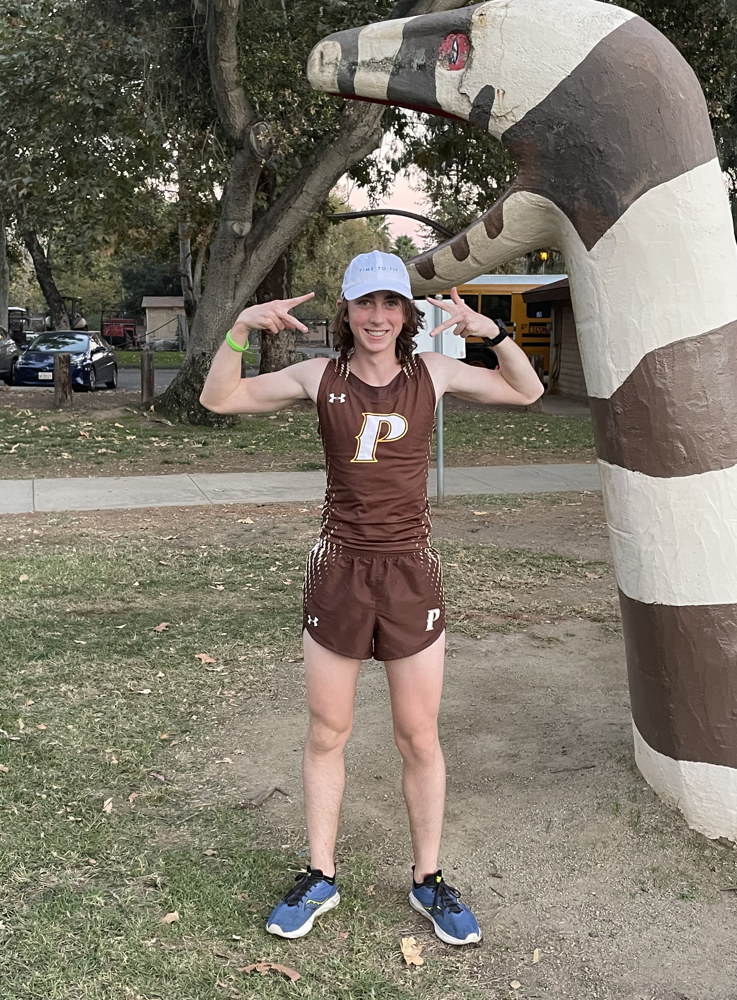
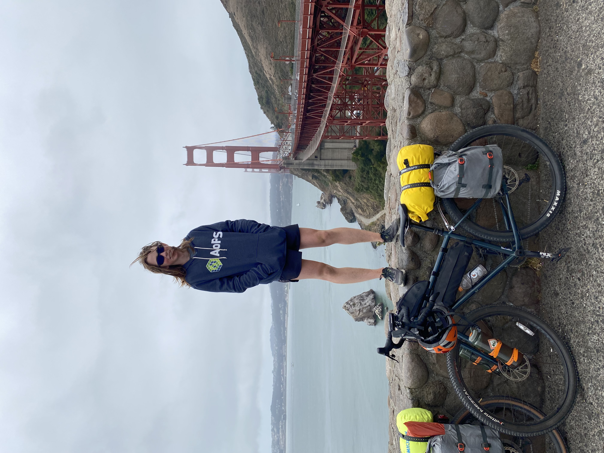

SkyParker is
the name I chose for my Minecraft account in 2015. Dad got it so I could code in an afterschool program; that was my gateway drug into programming
and being addicted to (but mediocre at) video games.
I got into Scratch a few months after that, making little games and visuals to show my friends. My entire 5th grade class playing Cubic was an
elementary school highlight-- linked in the codes page!
I learned Python (and a LOT of math) during the pandemic. AoPS, EdX, MITX, Coursera, and CS50 helped me
learn coding to pass the inside hours of lockdown.
Going into high school I took programming classes and expanded my skills to Java, HTML/CSS/JS, and SQL (the product of which is this site!).
SkyPark, this site, is the culmination of years spent learning to code and working on my personal projects. Go to the codes page, and enjoy!



Now I go outside, too!
Choosing to run cross country in 9th grade after lockdown got me off the laptop and outdoors. I've dedicated much of my time to my sport, boosting
my fitness and appreciation for nature. I am now much happier, and my experience outdoors has diversified. I go camping, rafting, hiking, and most
important (unique, too?) to me, bikepacking! For two years I fantisized about biking and camping some long distance. This summer my dad and
I made it happen! Our maiden voyage was through East San Diego in 110 degree weather, and to end the summer we biked 400 miles around the Bay Area!
I'm very thankful to my dad for helping me live out my dream. More trips will happen soon and go in the bikes page!
 





Progress!